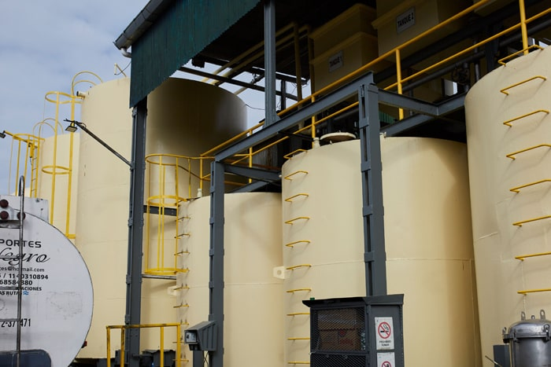

Excelencia en refinado de aceite vegetal.
Controlamos cada etapa del proceso, desde la recepción de materia prima hasta el envase que llega al consumidor final.
Cada aceite, su propio camino.
Dos líneas de refinación independientes, calibradas para las propiedades de cada materia prima. Seguí el flujo animado para ver cada etapa.
Aceite de Girasol
Recepción y control
Análisis fisicoquímico del aceite crudo de girasol antes de ingresar al proceso.
Neutralizado en frío
Eliminación de ácidos grasos libres a baja temperatura para preservar la calidad.
Blanqueo
Remoción de pigmentos y trazas metálicas mediante tierras decolorantes.
Desodorizado
Proceso a vapor de alta temperatura para eliminar compuestos volátiles.
Control y envasado
Análisis final y envasado en más de diez formatos: 250 cc a 10 L y granel.
Aceite de Soja
Recepción y análisis
Control de índice de acidez, humedad y perfil de ácidos grasos del aceite crudo.
Neutralizado
Tratamiento alcalino para reducir la acidez y eliminar fosfolípidos residuales.
Blanqueo
Decoloración con arcillas activadas para obtener un aceite claro y neutro.
Desodorizado
Destilación al vacío para remover ácidos grasos volátiles y compuestos de oxidación.
Envasado y despacho
Llenado automatizado, tapado, etiquetado y paletizado para distribución nacional e internacional.
Calidad respaldada por organismos nacionales e internacionales.
Nuestros procesos cumplen con los estándares más exigentes del mercado alimentario local e internacional. Descargá nuestros certificados.
Hablemos de tu proyecto.
Si necesitás información técnica adicional o querés conocer nuestras instalaciones, escribinos.
Contactar →